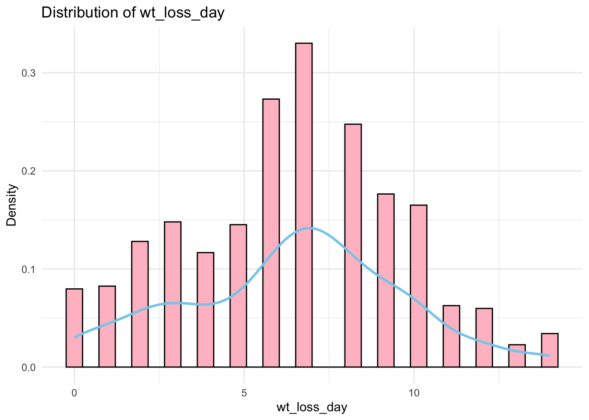

# Load packagelibrary(here)library(dplyr)library(gt)library(ggplot2)# Load dataiavdata <-read.csv(here("cdcdata-exercise", "influenza_data.csv"))# Get an overview of the datastr(iavdata) # Structure of the dataset
'data.frame': 728 obs. of 29 variables:
$ Ferret : chr "F1" "F2" "F3" "F4" ...
$ Virus : chr "A/Turkey/VA/4529/2002" "A/Turkey/VA/4529/2002" "A/Turkey/VA/4529/2002" "A/Turkey/VA/4529/2002" ...
$ inoc_dose : num 7 7 7 7 7 7 7 7 7 7 ...
$ units : chr "EID" "EID" "EID" "EID" ...
$ expt : chr "path" "path" "path" "DC" ...
$ lethal : chr "false" "false" "false" "false" ...
$ lethal_day : int 0 0 0 0 0 0 0 0 0 0 ...
$ NW_typical : chr "true" "true" "true" "true" ...
$ RD_trans : chr NA NA NA NA ...
$ HPAI : chr "false" "false" "false" "false" ...
$ HPAI_MBAA : chr "false" "false" "false" "false" ...
$ HA : chr "H7" "H7" "H7" "H7" ...
$ NA. : chr "N2" "N2" "N2" "N2" ...
$ Origin : chr "avian" "avian" "avian" "avian" ...
$ wt_loss : num 6.7 11.8 15.4 5.9 7.9 6.1 3.5 22.5 15 14.9 ...
$ wt_loss_day: int 7 4 6 11 5 9 11 7 7 8 ...
$ temp : num 0.5 0.9 2 1 1 0.5 0.5 1.1 1.1 1 ...
$ temp_day : int 4 7 8 9 3 3 7 7 7 1 ...
$ temp_5 : num 0.5 0.7 1.8 0.3 1 0.5 0.3 0.1 0.6 1 ...
$ temp_5_day : int 4 2 2 3 3 3 1 3 3 1 ...
$ d1_inoc : num 6.5 5.5 6.25 6.75 6.25 7.25 5.75 5.75 4.75 6.5 ...
$ d2_inoc : num NA NA NA NA NA NA NA NA NA NA ...
$ d3_inoc : num 4.5 6.5 5.5 6.75 6.5 6.75 5.75 5.5 3.75 5.25 ...
$ d4_inoc : num NA NA NA NA NA NA NA NA NA NA ...
$ d5_inoc : num 4.75 4.75 5.75 5.75 4.75 4.5 5.75 5.5 5.25 6.5 ...
$ d6_inoc : num NA NA NA NA NA NA NA NA NA NA ...
$ d7_inoc : num 1.75 1.5 1.5 3.25 1.5 1.5 1.5 2.25 1.5 3.25 ...
$ d8_inoc : num NA NA NA NA NA NA NA NA NA NA ...
$ d9_inoc : num 1.5 1.5 1.5 1.5 1.5 1.5 1.5 1.5 1.5 1.5 ...
summary(iavdata) # Summary statistics
Ferret Virus inoc_dose units
Length:728 Length:728 Min. :5.000 Length:728
Class :character Class :character 1st Qu.:6.000 Class :character
Mode :character Mode :character Median :6.000 Mode :character
Mean :6.089
3rd Qu.:6.000
Max. :7.000
expt lethal lethal_day NW_typical
Length:728 Length:728 Min. : 0.000 Length:728
Class :character Class :character 1st Qu.: 0.000 Class :character
Mode :character Mode :character Median : 0.000 Mode :character
Mean : 1.049
3rd Qu.: 0.000
Max. :13.000
RD_trans HPAI HPAI_MBAA HA
Length:728 Length:728 Length:728 Length:728
Class :character Class :character Class :character Class :character
Mode :character Mode :character Mode :character Mode :character
NA. Origin wt_loss wt_loss_day
Length:728 Length:728 Min. : 0.000 Min. : 0.000
Class :character Class :character 1st Qu.: 4.800 1st Qu.: 4.000
Mode :character Mode :character Median : 9.300 Median : 7.000
Mean : 9.914 Mean : 6.431
3rd Qu.:14.425 3rd Qu.: 9.000
Max. :27.500 Max. :14.000
temp temp_day temp_5 temp_5_day d1_inoc
Min. :0.000 Min. : 0.000 Min. :0.000 Min. :0.00 Min. :1.00
1st Qu.:1.000 1st Qu.: 1.000 1st Qu.:1.000 1st Qu.:1.00 1st Qu.:4.85
Median :1.500 Median : 2.000 Median :1.500 Median :2.00 Median :5.78
Mean :1.586 Mean : 3.082 Mean :1.501 Mean :2.04 Mean :5.81
3rd Qu.:2.200 3rd Qu.: 4.000 3rd Qu.:2.025 3rd Qu.:3.00 3rd Qu.:6.75
Max. :4.000 Max. :14.000 Max. :4.000 Max. :5.00 Max. :9.25
NA's :115
d2_inoc d3_inoc d4_inoc d5_inoc
Min. :3.500 Min. :1.980 Min. :1.980 Min. :1.500
1st Qu.:5.500 1st Qu.:4.500 1st Qu.:4.250 1st Qu.:4.470
Median :5.813 Median :5.340 Median :5.250 Median :5.100
Mean :5.931 Mean :5.296 Mean :5.008 Mean :5.048
3rd Qu.:6.500 3rd Qu.:6.250 3rd Qu.:5.750 3rd Qu.:5.750
Max. :8.750 Max. :8.750 Max. :7.500 Max. :9.500
NA's :607 NA's :115 NA's :613 NA's :121
d6_inoc d7_inoc d8_inoc d9_inoc
Min. :1.301 Min. :1.000 Min. :1.000 Min. :1.000
1st Qu.:3.250 1st Qu.:1.000 1st Qu.:1.500 1st Qu.:1.000
Median :4.500 Median :1.500 Median :1.500 Median :1.500
Mean :4.123 Mean :1.997 Mean :1.543 Mean :1.327
3rd Qu.:5.250 3rd Qu.:2.500 3rd Qu.:1.500 3rd Qu.:1.500
Max. :6.750 Max. :7.000 Max. :3.500 Max. :4.750
NA's :621 NA's :150 NA's :632 NA's :180
The variables d1_inoc, d2_inoc, …, d9_inoc have missing values, likely due to the every-other-day sampling schedule or the euthanasia of ferrets that reached humane endpoints in the study. However, I will not focus on these variables, as I find other variables more interesting for exploration. I choose the variables lethal, Origin, wt_loss, wt_loss_day, and temp to do exploration.
lethal: if the ferret survived the 14 day p.i. inoculation period (FALSE) or was humanely. euthanized between days 1-14 p.i. due to reaching experimental endpoints (TRUE).
Origin: Categorical column indicating the host origin of the inoculating virus.
wt_loss: Numerical column that specifies the maximum percentage weight loss.
wt_loss_day :Numerical column that indicates the day p.i. the maximum percentage weight loss reported in wt_loss was detected.
temp: Numerical column that specifies the maximum increase in degrees Celsius.
Explore the data
Explore the categorical variables
# Make table summarizing the Origin lethal rate# Encode lethal to be logicaliavdata2 <- iavdata2 %>%mutate(lethal =as.logical(lethal)) # Create a summary table with lethal rate (where lethal is TRUE)exploratory_table <- iavdata2 %>%group_by(Origin) %>%summarise(Total =n(),Lethal_True =sum(lethal, na.rm =TRUE), # Ensure TRUE values are countedLethal_Rate =round((Lethal_True / Total) *100, 2) # Calculate percentage ) %>%arrange(desc(Lethal_Rate)) # Sort by Lethal Rate# Display the tableexploratory_table %>%gt() %>%tab_header(title ="Lethal (TRUE) Rate by Origin" ) %>%cols_label(Origin ="Origin",Total ="Total Cases",Lethal_True ="Lethal (TRUE) Count",Lethal_Rate ="Lethal Rate (%)" )
Lethal (TRUE) Rate by Origin
Origin
Total Cases
Lethal (TRUE) Count
Lethal Rate (%)
avian
384
97
25.26
human
180
7
3.89
variant
146
4
2.74
canine
3
0
0.00
swine
15
0
0.00
# Make table summarizing the composition of the Originorigin_summary <- iavdata2 %>%group_by(Origin) %>%summarise(Count =n(), # Total observations per originPercentage =round((Count /nrow(iavdata2)) *100, 2) # Calculate percentage ) %>%arrange(desc(Count)) # Sort by highest count# Display the tableorigin_summary %>%gt() %>%tab_header(title ="Composition of Origin" ) %>%cols_label(Origin ="Origin",Count ="Count",Percentage ="Percentage (%)" )
Composition of Origin
Origin
Count
Percentage (%)
avian
384
52.75
human
180
24.73
variant
146
20.05
swine
15
2.06
canine
3
0.41
Explore continuous variables
# Plot the distribution and summarize mean and standard deviation of wt_loss, wt_loss_day, and temp# Define a function to plot and summarize a variableplot_and_summarize <-function(data, variable) {# Create histogram with density curve p <-ggplot(data, aes(x =!!sym(variable))) +geom_histogram(aes(y = ..density..), bins =30, fill ="pink", color ="black") +geom_density(color ="skyblue", size =1) +labs(title =paste("Distribution of", variable), x = variable, y ="Density") +theme_minimal()# Print the plotprint(p)# Calculate mean and standard deviation summary_stats <- data %>%summarise(Mean =mean(!!sym(variable), na.rm =TRUE),SD =sd(!!sym(variable), na.rm =TRUE) )return(summary_stats)}# Plot and summarize wt_losswt_loss_summary <-plot_and_summarize(iavdata2, "wt_loss")
print(wt_loss_summary)
Mean SD
1 9.914286 6.668187
# Plot and summarize wt_loss_daywt_loss_day_summary <-plot_and_summarize(iavdata2, "wt_loss_day")

print(wt_loss_day_summary)
Mean SD
1 6.431319 3.193995
# Plot and summarize temptemp_summary <-plot_and_summarize(iavdata2, "temp")
print(temp_summary)
Mean SD
1 1.585989 0.7760666
# Box plot of lethal vs. wt_lossggplot(iavdata2, aes(x =as.factor(lethal), y = wt_loss)) +geom_boxplot(fill ="skyblue", color ="black", outlier.color ="red", outlier.size =2) +labs(title ="Box Plot of Lethal vs. Maximum Percentage Weight Loss",x ="Lethal (0 = False, 1 = True)",y ="Weight Loss (wt_loss)" ) +theme_minimal()
# Box plot of lethal vs. wt_loss_dayggplot(iavdata2, aes(x =as.factor(lethal), y = wt_loss_day)) +geom_boxplot(fill ="skyblue", color ="black", outlier.color ="red", outlier.size =2) +labs(title ="Box Plot of Lethal vs. Day of Maximum Percentage Weight Loss",x ="Lethal (0 = False, 1 = True)",y ="Weight Loss Day (wt_loss_day)" ) +theme_minimal()
# Box plot of lethal vs. tempggplot(iavdata2, aes(x =as.factor(lethal), y = temp)) +geom_boxplot(fill ="skyblue", color ="black", outlier.color ="red", outlier.size =2) +labs(title ="Box Plot of Lethal vs. Maximum Increase in Degrees Celsius",x ="Lethal (0 = False, 1 = True)",y ="Temperature (temp)" ) +theme_minimal()